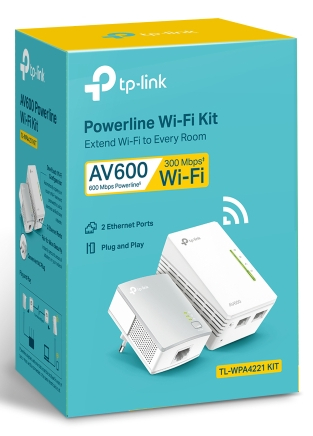
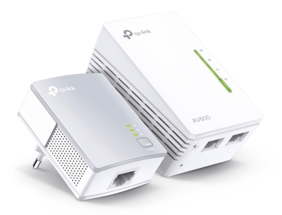
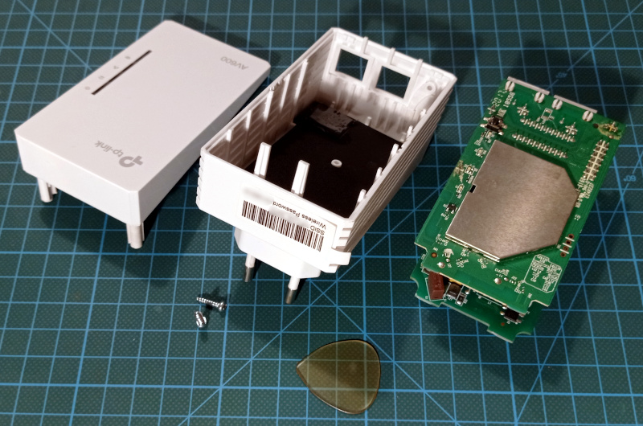
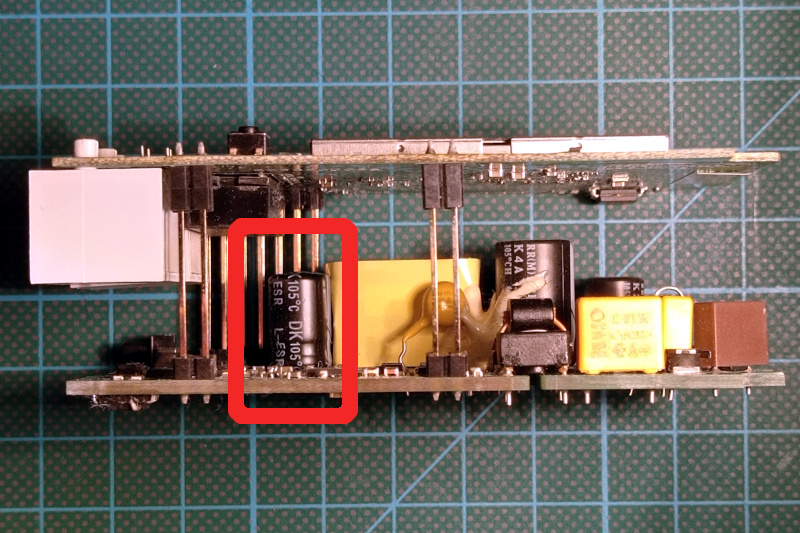
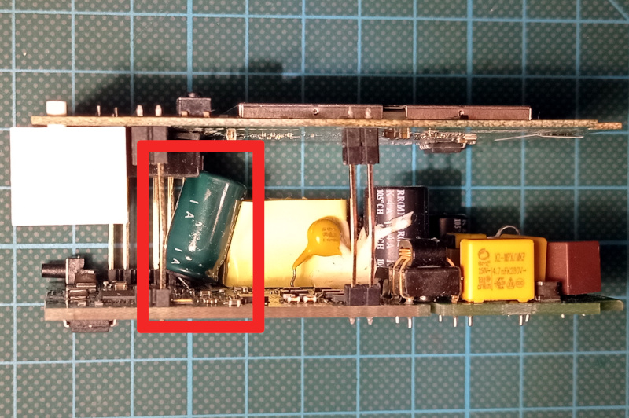
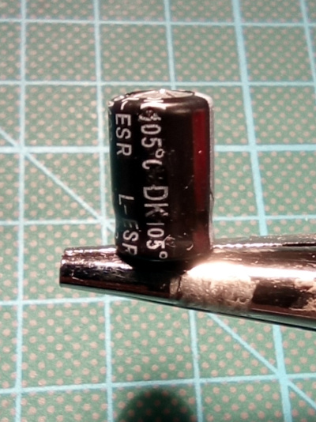

risorse | riparazione tp-link AV600
Nel 2020, ai tempi del Covid e della DAD, ho acquistato un “WiFi Range Extender”, in particolare il kit TL-WPA4220 della TP-Link, per allargare il campo d'azione della rete WiFi casalinga:
La scatola del kit TL-WPA4220.
Il kit consiste di due moduli: il primo, l'adattatore Powerline, va inserito in una presa di corrente accanto al router e a questo collegato per mezzo di un cavo Ethernet; il secondo, l'extender Powerline, va innestato in una presa elettrica nella zona non coperta dal segnale del router; qui, comunicando con il primo adattatore tramite il circuito elettrico domestico, apre una nuova rete WiFi per un accesso a Internet più stabile e robusto.
A sinistra l'adattatore Powerline, a destra il modulo extender.
Dopo un paio d'anni di buon funzionamento, qualche mese fa la connessione è diventata dapprima instabile, per diventare di fatto inutilizzabile dopo qualche settimana. Avendo iniziato ad emettere un preoccupante ronzio, ho deciso di dismettere la rete WiFi aggiuntiva.
Il ronzio emesso dal modulo ha una fondamentale a 2KHz.
Avevo deciso di disfarmi dei due apparecchi non più in garanzia, tuttavia la curiosità mi ha spinto a verificare se altri clienti hanno sofferto dello stesso problema. Con mia sorpresa ho scoperto che si tratta di un difetto noto, tant'è che si trova citato in molteplici richieste d'aiuto nel forum di supporto di TP-Link, per esempio:
Il problema è riconducibile ad una partita di condensatori difettosi. Il componente in questione è l'unico condensatore elettrolitico da 470µF 16V presente nel modulo extender.
Ho deciso di tentare la riparazione, avendo a disposizione un condensatore 470µF 25V di recupero (grazie Ferruccio!). È leggermente più grande di quello originale, spero ci sia spazio a sufficienza all'interno del modulo per ospitarlo.
Per raggiungere i circuiti interni occorre rimuovere le due viti ai lati della spina, quindi separare le due parti che costituiscono l'involucro con pazienza e un po' di decisione. Io mi sono aiutato facendo leva lungo le fessure laterali con un plettro da chitarra:
Il modulo extender aperto.
Il condensatore da sostituire occupa una posizione di non agevole accesso:
Il condensatore da sostituire.
A occhio sembra ci sia spazio verticale sufficiente per ospitare il sostituto. Individuo i terminali da dissaldare e annoto mentalmente la posizione del catodo, che sta a destra — i condensatori elettrolitici sono polarizzati e per tale motivo vanno rimpiazzati rispettandone la polarità —:

La posizione occupata dal condensatore.
L'estrazione del condensatore fallato riesce abbastanza agevolmente; con pazienza riesco a sistemare al meglio il sostituto che si rivela però più alto di quanto preventivato, tant'è che a malincuore lo lascio un po' di sgembo:
Il condensatore di recupero si rivela più alto del previsto.
La posizione non ottimale non pregiudica il funzionamento del circuito che alla prova dei fatti risulta perfettamente ripristinato: la WiFi aggiuntiva è riapparsa, con le stesse caratteristiche di efficienza e stabilità di un tempo. Il fastidioso ronzio è sparito.
Il condensatore originale subito dopo la rimozione.
Do' un'ultima occhiata al condensatore fallato prima di buttarlo: si nota il caratteristico rigonfiamento della testa, segno che è giunto a fine vita. Fortunatamente non ci sono tracce di sversamenti nel punto in cui era fissato.
Pagina modificata il 16/09/2023